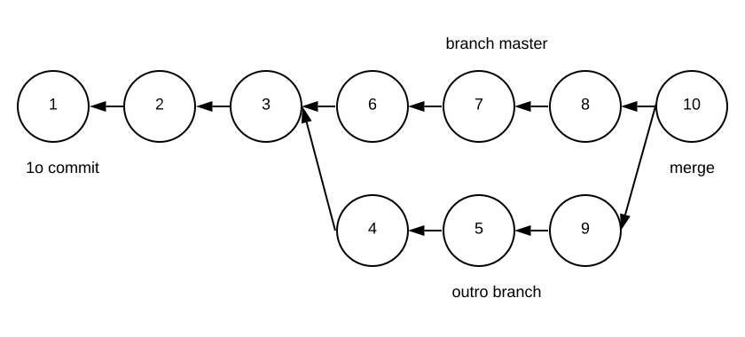
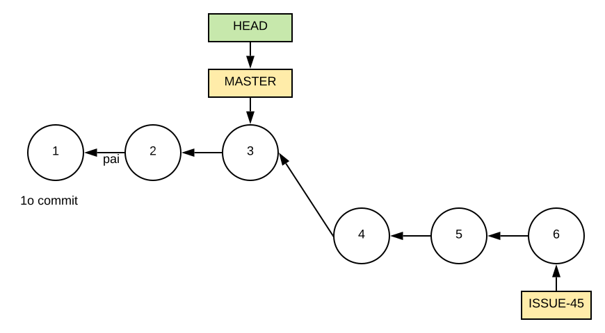
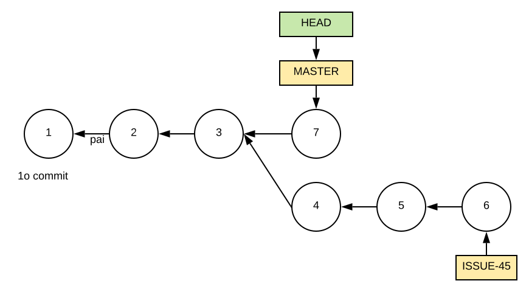

Compre na Amazon, Submarino ou UmLivro
Veja também os cursos de extensão a distância Engenharia de Software Moderna (48 horas) e Teste de Software (20 horas), oferecidos pelo DCC/ICEX/UFMG.
Engenharia de Software Moderna
1 Git
The best way to learn git is probably to first only do very basic things and not even look at some of the things you can do until you are familiar and confident about the basics. – Linus Torvalds
Neste apêndice, apresentamos e discutimos exemplos de uso do sistema
Git, que é o sistema de controle de versões mais usado atualmente.
Inspirados pela frase acima, de Linus Torvalds, criador do Git, vamos
focar nos conceitos e comandos básicos desse sistema. Como sugere a
frase, é importante dominar esses comandos antes de se aventurar no uso
de comandos mais avançados. Caso o leitor não tenha conhecimento dos
objetivos e vantagens proporcionados por um sistema de controle de
versões, recomendamos primeiro a leitura da seção Controle de
Versões
, do Capítulo 10 deste livro.
1.1 Init & Clone
Para começar a usar o git para gerenciar as versões de um sistema
devemos executar um dos seguintes comandos: init ou
clone. O comando init cria um repositório
vazio. O segundo comando — clone — primeiro chama
init para criar um repositório vazio. Em seguida, ele copia
para esse repositório todos os commits de um repositório remoto, passado
como parâmetro. Seja, por exemplo, o seguinte comando:
git clone https://github.com/NOME-USER/NOME-REPO
Esse comando clona para o diretório corrente um repositório armazenado remotamente no GitHub. Portanto, devemos usar clone quando vamos trabalhar em um projeto que já está em andamento e que já possui commits em um repositório central. No exemplo, esse repositório é disponibilizado pelo GitHub.
1.2 Commit
Commits são usados para criar snapshots (ou fotografias) dos arquivos de um sistema. Uma vez tiradas essas fotografias, elas são armazenadas no sistema de controle de versões, de forma compactada e otimizada, para não ocupar muito espaço em disco. Posteriormente, pode-se recuperar qualquer uma das fotografias, para, por exemplo, restaurar uma implementação antiga de um determinado arquivo.
Recomenda-se que desenvolvedores realizem commits periodicamente, sempre que tiverem efetuado uma mudança importante no código. Em sistemas de controle de versões distribuídos, como o git, os commits são primeiro armazenados no repositório local do desenvolvedor. Por isso, o custo de um commit é pequeno e, portanto, desenvolvedores podem realizar diversos commits ao longo de um dia de trabalho. Na verdade, o que não é recomendável é a realização de commits grandes, com modificações importantes em diversos arquivos. Também não recomenda-se que um commit inclua modificações relativas a mais de uma tarefa de manutenção. Por exemplo, não é recomendável corrigir dois bugs em um mesmo commit. Em vez disso, cada bug deve ser corrigido em um commit separado. Assim, facilita-se uma futura análise do código, caso, por exemplo, um cliente volte a reclamar que seu bug não foi corrigido.
Commits também possuem metadados, incluindo data, hora, autor e uma mensagem, que descreve a modificação realizada pelo commit. A próxima figura mostra uma página do GitHub que exibe os metadados principais de um commit do repositório google/guava. Pode-se observar que o commit refere-se a um refactoring, o que fica claro no seu título. Em seguida, o refactoring é explicado em detalhes na mensagem do commit. Na última linha da figura, podemos ver o nome do autor do commit e a informação de que ele foi realizado há 13 dias.
Na última linha da figura também podemos observar que todo commit possui um identificador único, no caso:
1c757483665f0ba8fed31a2af7e31643a4590256
Esse identificador possui 20 bytes, normalmente representados em hexadecimal. Esses bytes correspondem a uma verificação de consistência (check sum) do conteúdo do commit, conforme computado por uma função hash SHA-1.
1.3 Add
Na máquina local, o sistema git manipula três áreas distintas:
Um diretório de trabalho, onde devemos salvar os arquivos que pretendemos versionar. Às vezes, essa área é chamada também de árvore de trabalho (working tree).
O repositório propriamente dito, que armazena o histórico de commits.
Uma área intermediária, chamada de index ou stage, que armazena temporariamente os arquivos que se pretende versionar. Tais arquivos são ditos rastreáveis (tracked).
Dentre essas três áreas, o desenvolvedor acessa apenas o diretório de trabalho, que funciona como um diretório comum do sistema operacional. As duas outras áreas são internas ao git e manipuladas exclusivamente por ele. Como qualquer diretório, o diretório de trabalho pode conter diversos arquivos. Porém, apenas aqueles adicionados ao index, por meio de um add, serão gerenciados pelo git.
Além de armazenar a lista de arquivos versionados, o index também
armazena o conteúdo deles. Por isso, antes de fazer um
commit devemos executar um add, para salvar o
conteúdo do arquivo no index. Feito isso, podemos usar um
commit para salvar no repositório local a versão adicionada
ao index. Esse fluxo é ilustrado na próxima figura.
Exemplo: Suponha o seguinte arquivo simples, mas
suficiente para explicar os comandos add e
commit.
// arq1
x = 10; Após criar esse arquivo, o desenvolvedor executou o seguinte comando:
git add arq1
Esse comando adiciona o arquivo arq1 no index (ou
stage). Porém, logo em seguida, o desenvolvedor modificou de novo o
arquivo:
// arq1
x = 20; // novo valor de xFeito isso, ele executou:
git commit -m "Alterando o valor de x"
A opção -m informa a mensagem que descreve o commit.
Porém, o ponto que queremos ressaltar com esse exemplo é o seguinte:
como o usuário não executou um novo add após mudar o valor
de x para 20, a versão mais recente do arquivo não será
salva pelo commit. Em vez disso, a versão de arq1 que será
versionada é aquela em que x tem o valor 10, pois ela é a
versão que consta do index.
Para evitar o problema descrito nesse exemplo, é comum usar um
commit da seguinte forma:
git commit -a -m "Alterando valor de x"
A opção -a indica que antes de executar o commit
queremos adicionar no index todos os arquivos rastreados
(tracked) que tenham sido modificados desde o último commit.
Portanto, a opção -a não elimina a necessidade de usar
add. O uso desse comando continua sendo necessário, pelo
menos uma vez, para indicar ao git que desejamos tornar um determinado
arquivo rastreável.
Da mesma forma que existe um add, também existe uma
operação para remover um arquivo de um repositório git. Um exemplo é
dado a seguir:
git rm arq1.txt
git commit -m "Removendo arq1.txt"Além de remover do repositório git local, o comando rm
também remove o arquivo do diretório de trabalho.
1.4 Status, Diff & Log
O comando status é um dos comandos git mais usados. Dentre outras informações, ele mostra o estado do diretório de trabalho e do index. Por exemplo, pode-se usar esse comando para obter informações sobre:
Arquivos do diretório de trabalho que foram alterados pelo desenvolvedor, mas que ele ainda não adicionou no index.
Arquivos do diretório de trabalho que não são rastreados pelo git, ou seja, eles ainda não foram objetos de um
add.Arquivos que encontram-se no index, aguardando um
commit.
O comando git diff é muito usado para destacar as
modificações realizados nos arquivos do diretório de trabalho e que
ainda não foram movidas para o index (ou stage). Para cada arquivo
modificado, ele mostra as linhas que foram adicionadas (+) e removidas
(-). Muitas vezes, usamos um git diff antes de um
add/commit para ter certeza das mudanças que
iremos perpetuar
, em seguida, no sistema de controle de
versões.
Já o comando git log lista informações sobre os últimos
commits, como data, autor, hora e descrição do commit.
1.5 Push & Pull
O comando push copia os commits mais recentes do
repositório local para o repositório remoto. Portanto, ele é uma
operação mais lenta, pois envolve comunicação pela rede. Um
push deve ser usado quando o desenvolvedor deseja tornar
uma modificação visível para os demais desenvolvedores. Para atualizar
seu repositório local, os outros desenvolvedores do time devem executar
um comando pull. Esse comando realiza duas operações
principais:
Primeiro, um
pullcopia os commits mais recentes do repositório central para o repositório local do desenvolvedor. Essa operação inicial é chamada de fetch.Em seguida, o comando
pullatualiza os arquivos do diretório de trabalho. Essa operação é chamada de merge.
A próxima figura ilustra o funcionamento dos comandos
push e pull.
Exemplo: Suponha que no repositório git central de um projeto exista o seguinte arquivo:
void f() {
...
}Suponha que dois desenvolvedores, chamados Bob e Alice, realizaram um
pull e, portanto, copiaram esse arquivo para o repositório
local e para o diretório de trabalho de suas máquinas. A sintaxe desse
comando é a seguinte:
git pull
No mesmo dia, Bob implementou uma segunda função g no
arquivo:
void f() { // antiga
...
}
void g() { // implementada por Bob
...
}Em seguida, Bob realizou um add, um commit
e um push. Esse último comando tem a seguinte sintaxe:
git push origin master
O parâmetro origin é um valor default, usado pelo git,
para indicar o repositório remoto, por exemplo, o repositório GitHub. Já
o parâmetro master indica o branch principal. Iremos
estudar mais sobre branches daqui a pouco.
Após executar o comando push acima, a nova versão do
arquivo estará salva também no repositório remoto. Alguns dias depois,
Alice decidiu que precisa alterar esse mesmo arquivo. Como ela ficou um
tempo sem trabalhar no sistema, o recomendado é que ela execute primeiro
um pull, para atualizar seu repositório local e seu
diretório de trabalho com as mudanças ocorridas nesse período, como
aquela realizada por Bob. Assim, após esse pull, o arquivo
em questão será atualizado na máquina da Alice, para incluir a função
g implementada por Bob.
1.6 Conflitos de Merge
Conflitos de merge acontecem quando dois desenvolvedores alteram o mesmo trecho de código ao mesmo tempo. Para entender melhor essa situação, nada melhor do que usar um exemplo.
Exemplo: Suponha que Bob implementou o seguinte programa:
main() {
print("Helo, world!");
}Concluída a implementação, Bob realizou um add, seguido
de um commit e um push.
Em seguida, Alice realizou um pull e obteve a versão do
arquivo implementada por Bob. Então, Alice resolveu traduzir a mensagem
do programa para português:
main() {
print("Olá, mundo!");
}Enquanto Alice fazia a tradução, Bob percebeu que escreveu Hello de
forma errada, com apenas uma letra l. Porém, Alice foi mais rápida e
realizou a trinca de comandos add, commit e
push.
Bob, após corrigir o erro de ortografia, salvou o arquivo e também
executou um add, seguido de um commit. Por
fim, ele executou push, mas o comando falhou com a seguinte
mensagem de erro:
not have locally. This is usually caused by another repository
pushing to the same ref. You may want to first integrate the
remote changes (e.g., git pull …) before pushing again.
A mensagem é bem clara: Bob não pode executar um push,
pois o repositório remoto possui conteúdo novo, no caso, gerado por
Alice. Antes de executar um push, Bob precisa executar um
pull. Porém, ao fazer isso, ele recebe uma nova mensagem de
erro:
Automatic merge failed; fix conflicts and then commit the result.
Essa nova mensagem é também clara: existe um conflito de merge no
arquivo arq2. Ao editar esse arquivo, Bob vai perceber que
ele foi modificado pelo git, para destacar as linhas que geraram o
conflito:
main() {
<<<<<<< HEAD
print("Hello, world!");
=======
print("Olá, mundo!");
>>>>>>> f25bce8fea85a625b891c890a8eca003b723f21b
} As linhas inseridas pelo git devem ser entendidas da seguinte forma:
Entre
<<<<<<< HEADe=======temos o código modificado por Bob, isto é, pelo desenvolvedor que não conseguiu dar umpushe teve que dar umpull.HEADdesigna que o código foi modificado no último commit realizado por Bob.Entre
=======e>>>>>>> f25bce8 ...temos o código modificado por Alice, isto é, pela desenvolvedora que executou com sucesso seupush.f225bce8...é o ID do commit no qual Alice modificou essa parte do código.
Cabe então a Bob resolver o conflito, o que é sempre uma tarefa manual. Para isso, ele tem que escolher o trecho de código que vai prevalecer — o seu código ou o da Alice — e editar o arquivo de acordo com tal escolha, para remover os delimitadores inseridos pelo git.
Vamos supor que Bob decida que o código de Alice é o certo, pois agora o sistema está usando mensagens em português. Logo, ele deve editar o arquivo, de forma que fique assim:
main() {
print("Olá, mundo!");
} Veja que Bob removeu os delimitadores inseridos pelo git
(<<<<<<< HEAD , =======
e >>>>>>> f25bce8...). E também o
comando print com a mensagem em inglês. Após deixar o
código da forma correta, Bob deve executar novamente os comandos
add, commit e push, que agora
serão bem sucedidos.
Nesse exemplo, mostramos um conflito simples, que ficou restrito a
única linha de um único arquivo. No entanto, um pull pode
dar origem a conflitos mais complexos. Por exemplo, um mesmo arquivo
pode apresentar vários conflitos. E também podemos ter conflitos em mais
de um arquivo.
1.7 Branches
O git organiza o diretório de trabalho em diretórios virtuais
,
chamados de branches. Até agora, não precisamos
comentar sobre branches porque todo repositório possui um branch
default, chamado de master, criado pelo comando
init. Se não nos preocuparmos com branches, todo o
desenvolvimento ocorrerá no master. Porém, em alguns casos, é
interessante criar outros branches para melhor organizar o
desenvolvimento. Para descrever o conceito de branches, vamos de novo
usar um exemplo.
Exemplo: Suponha que Bob é responsável por manter
uma determinada funcionalidade de um sistema. Para simplificar, vamos
assumir que essa funcionalidade é implementada em uma única função
f. Bob teve a ideia de mudar completamente a implementação
de f, de forma que ela passe a usar algoritmos e estruturas
de dados mais eficientes. Para isso, Bob vai precisar de algumas
semanas. No entanto, apesar de estar otimista, Bob não tem certeza de
que a nova implementação vai proporcionar os ganhos que ele imagina. Por
fim, mas não menos importante, durante a implementação do novo código,
Bob pode precisar do código original de f, para, por
exemplo, corrigir bugs reportados pelos usuários.
Esse é um cenário interessante para Bob criar um branch para
implementar e testar — de forma isolada — essa nova versão de
f. Para isso, ele deve usar o comando:
git branch f-novo
Esse comando cria um novo branch, chamado f-novo,
supondo que esse branch ainda não existe.
Para mudar do branch corrente para um novo branch, deve-se usar
git checkout [nome-branch]. Para descobrir qual o nome do
branch corrente, basta usar git branch. Na verdade, esse
comando lista todos os branches e indica qual deles é o corrente.
Branches podem ser entendidos como "sub-diretórios virtuais" do
diretório de trabalho. A principal diferença é que branches são
gerenciados pelo git e não pelo sistema operacional. Por isso, optamos
por chamá-los de virtuais. Explorando mais essa comparação, podemos
pensar que o comando git branch [nome] equivale ao comando
mkdir [nome], com a diferença que o git não apenas cria um
branch mas copia para ele todos os arquivos do branch pai. Por outro
lado, diretórios são criados vazios pelo sistema operacional. Já o
comando git checkout [nome] lembra o comando
cd [nome]. E git status lembra um misto de
comandos ls e pwd. Também para reforçar essa
comparação, existem certos comandos que permitem adicionar ao prompt do
sistema operacional não apenas o nome do diretório corrente mas também o
nome do branch corrente. Assim, o prompt pode ser exibido como
~/projetos/sistema/master>.
Por outro lado, existe também uma diferença importante entre branches
e diretórios. Um desenvolvedor somente pode alterar o branch corrente de
A para B se as modificações que ele fez em A estiverem salvas. Isto é,
se ele tiver realizado antes um add e commit.
Caso ele tenha esquecido de chamar esses comandos, um comando git
checkout B irá falhar com a seguinte mensagem de erro:
[list of files]
Please commit your changes or stash them before you switch branches.
Voltando ao exemplo, após Bob ter criado o seu branch, ele deve
proceder do seguinte modo. Quando ele quiser trabalhar na nova
implementação de f, ele deve primeiro mudar o branch
corrente para f-novo. Por outro lado, quando ele precisar
modificar o código original de f — aquele que está em
produção — ele deve se certificar de que o branch corrente é o
master. Independentemente do branch em que estiver, Bob
deve usar add e commit para salvar o estado do
seu trabalho.
Bob vai continuar nesse fluxo, alternando entre os branches
f-novo e master, até que a nova implementação
de f esteja concluída. Quando isso acontecer, Bob vai
precisar copiar o novo código de f para o código original.
No entanto, como está usando branches, ele não precisa realizar essa
operação de forma manual. O git oferece uma operação, chamada
merge, que realiza exatamente essa cópia. A sintaxe é a
seguinte:
git merge f-novo
Esse comando deve ser chamado no branch que irá receber as
modificações realizadas em f-novo. No nosso caso, no branch
master.
Como o leitor já deve estar pensando, um merge pode gerar conflitos,
chamados também de conflitos de integração. No caso
específico de merge de branches, esses conflitos vão ocorrer quando
tanto o branch que está recebendo as modificações (master,
no nosso exemplo) como o branch que está sendo integrado
(f-novo, no exemplo) tiverem alterado os mesmos trechos de
código. Conforme discutido na Seção A.6, o git irá delimitar os trechos
com conflitos e caberá ao desenvolvedor que chamou o merge
resolvê-los. Isto é, escolher o código que deve prevalecer.
Por fim, após realizar o merge, Bob pode remover o branch
f-novo, caso não seja importante manter o histórico dos
commits realizados para implementar a nova versão de f.
Para deletar f-novo, ele deve executar o seguinte comando
no master:
git branch -d f-novo
1.7.1 Grafo de Commits
Commits podem possuir zero, um ou mais pais (ou antecessores). Como ilustra a próxima figura, o primeiro commit de um repositório não possui pai. Já um commit de merge possui dois ou mais pais, que representam os branches que foram unidos. Os demais commits possuem exatamente um nodo pai.

Um branch nada mais é do que uma variável interna do git que contém
o identificador do último commit realizado no branch. Existe ainda uma
variável chamada HEAD, que aponta para a variável do branch
atual. Ou seja, HEAD contém o nome da variável que contém o
identificador do último commit do branch atual. Um exemplo é mostrado a
seguir:

Nesse exemplo, existem dois branches, representados pelas variáveis
MASTER e ISSUE-45. Cada uma delas aponta para
o último commit de seu respectivo branch. A variável HEAD
aponta para a variável MASTER. Isso significa que o branch
atual é o MASTER. Se realizarmos um commit, a configuração
mudará para:

O novo commit tem identificador 7. Ele foi realizado no
MASTER, já que HEAD apontava para a variável desse branch.
O pai do novo commit pai é o antigo HEAD, no caso o commit
3. A variável MASTER avançou e passou a apontar para o novo
commit. Isso significa que, se não mudarmos de branch, o pai do próximo
commit será o commit 7.
Porém, se mudarmos para o branch ISSUE-45, a
configuração será aquela mostrada na próxima figura. A única mudança é
que a variável HEAD passou a apontar para a variável do
novo branch, isto é, para a variável ISSUE-45. Isso é
suficiente para fazer com que o próximo commit seja realizado nesse
branch, isto é, que ela tenha o commit 6 como pai.

1.8 Branches Remotos
Até esse momento, trabalhamos com branches localmente, isto é, os
branches que discutimos existem apenas no repositório local. No entanto,
é possível realizar o push de um branch local para um
repositório remoto. Para ilustrar esse recurso, vamos usar um exemplo
semelhante ao da seção anterior.
Exemplo: Suponha que Bob criou um branch, chamado
g-novo, para implementar uma nova funcionalidade. Ele
realizou alguns commits nesse branch e agora gostaria de compartilhá-lo
com Alice, para que ela implemente parte da nova funcionalidade. Para
isso, Bob deve usar o seguinte push:
git push -u origin g-novo
Esse comando realiza o push do branch corrente
(g-novo) para o repositório remoto, chamado pelo git de
origin. O repositório remoto pode, por exemplo, ser um
repositório do GitHub. O parâmetro -u indica que, no
futuro, vamos querer sincronizar os dois repositórios por meio de um
pull (a letra do parâmetro vem da palavra
upstream). Essa sintaxe vale apenas para o primeiro
push de um branch remoto. Nos comandos seguintes, pode-se
omitir o -u, isto é, usar apenas
git push origin g-novo.
No repositório remoto, será criado um branch g-novo.
Para trabalhar nesse branch, Alice deve primeiro criá-lo na sua máquina
local, mas associado ao branch remoto, por meio dos seguintes comandos,
que devem ser executados no master:
git pull
git checkout -t origin/g-novo
O primeiro comando é necessário para tornar o branch remoto visível
na máquina local. Já o segundo comando cria um branch local, chamado
g-novo, que Alice vai usar para rastrear mudanças no branch
remoto origin/g-novo, conforme indica o parâmetro
-t, que vem da palavra tracking. Em seguida, Alice
pode realizar commits nesse branch. Por fim, quando estiver pronta para
publicar suas mudanças, ela deve executar um push, com a
sintaxe normal, isto é, sem o parâmetro -u.
Agora, Bob pode realizar um pull, concluir que a
implementação da nova funcionalidade está finalizada e, portanto, pode
ser integrada no master, por meio de um merge. Bob pode também deletar
os branches local e remoto, usando os comandos:
git branch -d g-novo
git push origin --delete g-novo
E Alice também pode deletar seu branch local, chamando apenas:
git branch -d g-novo
1.9 Pull Requests
Pull requests é um mecanismo que viabiliza que um branch seja revisado e discutido antes de ser integrado no branch principal. Quando se usa pull requests, um desenvolvedor sempre implementa novas funcionalidades em um branch separado. Concluída a implementação, ele não integra imediatamente o novo código no branch principal. Antes que isso ocorra, ele abre uma solicitação para que seu branch seja revisado e aprovado por um segundo desenvolvedor. Essa solicitação para revisão e integração de código é chamada de pull request. Trata-se de um mecanismo mais comum no GitHub, mas que possui equivalente em outros sistemas de controle de versões.
Modernamente, o processo de revisão e integração do código de um pull
request ocorre via interface Web, provida, por exemplo, pelo GitHub.
Porém, se essa interface não existisse, o revisor teria que começar o
seu trabalho realizando um pull do branch para sua máquina
local. Daí então a origem do nome, isto é, pull request é uma
solicitação (request) para que um segundo desenvolvedor revise
e integre um determinado branch. Para atender a essa solicitação, ele
deve começar realizando um pull do branch.
A seguir, vamos detalhar o processo de submissão e revisão de pull requests por meio de um exemplo.
Exemplo: Suponha que Bob e Alice são membros de uma
organização que mantém um repositório chamado awesome-git, com uma lista
de links interessantes sobre git. Os links ficam armazenados no arquivo
README.md desse repositório, isto é, na sua página principal, cujo
endereço é github.com/aserg-ufmg/awesome-git. Qualquer
membro da organização pode sugerir a adição de links nessa página. Mas
veja que estamos usando a palavra sugerir. Isto é, eles não podem fazer
um push diretamente no branch master. Em vez disso, a
sugestão de link precisa ser revisada e aprovada por um outro membro do
time.
Bob resolveu então sugerir a adição, nessa página, de um link para o
presente apêndice do livro Engenharia de Software Moderna. Para isso,
ele primeiro clonou o repositório e criou um branch, chamado
livro-esm, por meio dos seguintes comandos:
git clone https://github.com/aserg-ufmg/awesome-git.git
git checkout livro-esm
Em seguida, Bob editou o arquivo README.md, adicionando a URL do
apêndice. Por fim, ele realizou um add, um
commit e fez um push do branch para o
GitHub:
git add README.md
git commit -m "Livro ESM"
git push -u origin livro-esm
Na verdade, esses passos não são novidade em relação ao que vimos na
seção anterior. No entanto, as diferenças começam agora. Primeiro, Bob
deve ir na página do GitHub e selecionar o branch
livro-esm. Feito isso, o GitHub mostrará um botão para
criação de pull requests. Bob deve clicar nesse botão e descrever o seu
pull request, como mostra a próxima figura.
Um pull request é uma solicitação para que um outro desenvolvedor revise e, se for o caso, realize o merge de um branch que você criou. Consequentemente, pull requests são um recurso para que uma organização passe a adotar revisões de código. Ou seja, desenvolvedores não integram diretamente o seu código no master do repositório remoto. Em vez disso, eles solicitam, via pull requests, que outros desenvolvedores revisem primeiro esse código e então façam o merge.
Na página do GitHub para criação de pull requests, Bob pode informar
que deseja que seu código seja revisado pela Alice. Ela será então
notificada que existe um pull request esperando sua revisão. Também via
interface do GitHub, Alice pode revisar os commits do pull request
criado por Bob, inclusive por meio de um diff entre o código novo e o
código antigo. Se for o caso, Alice pode trocar mensagens com Bob, para
esclarecer dúvidas sobre o novo código. Mais ainda, ela pode solicitar
mudanças no código. Nesse caso, Bob deve providenciar as mudanças e
realizar um novo add, commit e
push. Então, os novos commit serão automaticamente anexados
ao pull request, para que Alice possa conferir se o seu pedido foi
atendido. Estando a modificação aprovada, Alice pode integrar o código
no master, bastando para isso clicar em um dos botões da página de
revisão de pull requests.
1.10 Squash
Squash é um comando que permite unir diversos commits em um único commit. É uma operação recomendada, por exemplo, antes de submeter pull requests.
Exemplo: No exemplo anterior, suponha que o pull request criado por Bob tivesse cinco commits. Mais especificamente, ele está sugerindo o acréscimo de cinco novos links no repositório awesome-git, os quais foram coletados por ele ao longo de algumas semanas. Após a descoberta de cada link, Bob executou um commit na sua máquina local. E deixou para realizar o pull request apenas após acumular cinco commits.
Para facilitar a revisão de seu pull request por parte de Alice, Bob pretende unir esses cinco commits em um único commit. Assim, em vez de analisar cinco commits, Alice vai ter que analisar apenas um. Porém, a modificação submetida será exatamente a mesma, isto é, ela consiste na inclusão de cinco novos links na página. Porém, em vez de a solicitação estar distribuída em cinco commits (cada commit, adicionando um único link), ela estará concentrada em apenas um commit (adicionando cinco links).
Para realizar um squash, Bob deve chamar:
git rebase -i HEAD~5
O número 5 significa que pretende-se unir os cinco últimos commits do branch atual. Um editor de textos será aberto com uma lista contendo o ID e a descrição de cada um, como mostrado a seguir:
pick 16b5fcc Incluindo link 1
pick c964dea Incluindo link 2
pick 06cf8ee Incluindo link 3
pick 396b4a3 Incluindo link 4
pick 9be7fdb Incluindo link 5Bob deve então usar o próprio editor para substituir a palavra pick por squash, exceto aquela da primeira linha. O arquivo ficará então assim:
pick 16b5fcc Incluindo link 1
squash c964dea Incluindo link 2
squash 06cf8ee Incluindo link 3
squash 396b4a3 Incluindo link 4
squash 9be7fdb Incluindo link 5Bob deve então salvar o arquivo. Automaticamente, um novo editor será aberto, para ele informar a mensagem do novo commit — isto é, do commit que junta os cinco commits listados. Uma vez informada a mensagem, Bob deve salvar o arquivo e, então, o squash estará finalizado.
1.11 Forks
Fork é o mecanismo que o GitHub oferece para clonar repositórios remotos, isto é, repositórios armazenados pelo próprio GitHub. Um fork é realizado via interface do GitHub. Na página de qualquer repositório, existe um botão para realizar essa operação. Se fizermos um fork do repositório torvalds/linux será criado uma cópia desse repositório na nossa conta do GitHub, chamado, por exemplo, mtov/linux.
Como fazemos sempre, vamos usar um exemplo para explicar essa operação.
Exemplo: Suponha o repositório
github.com/aserg-ufmg/awesome-git, usado no exemplo sobre
pull requests. Suponha ainda uma terceira desenvolvedora, chamada Carol.
Porém, como Carol não é membro da organização ASERG/UFMG, ela não tem
permissão para realizar push nesse repositório, como fez
Bob no exemplo anterior. Apesar disso, Carol acha que na lista atual
falta um link importante e interessante, cuja inclusão ela gostaria de
sugerir. Mas relembrando: Carol não pode seguir os mesmos passos usados
por Bob no exemplo anterior, pois ela não tem permissão para dar
push no repositório em questão.
Para resolver esse problema, Carol deve começar criando um fork do
repositório. Para isso, basta clicar no botão fork, que existe na página
de qualquer repositório no GitHub. Assim, Carol terá na sua conta do
GitHub um novo repositório, cujo endereço será o seguinte:
github.com/carol/awesome-git. Ela poderá clonar esse repositório para
sua máquina local, criar um branch, adicionar o link que deseja na lista
de links e realizar add, commit e
push. Essa última operação será realizada no repositório
resultante do fork. Por último, Carol deve ir na página do seu fork no
GitHub e solicitar a criação de um pull request. Como o repositório é um
fork, ela terá agora uma opção extra: destinar o pull request para o
repositório original. Assim, caberá aos desenvolvedores do repositório
original, como Bob e Alice, revisar e, se for o caso, aceitar o pull
request.
Portanto, fork é um mecanismo que, quando combinado com pull requests, viabiliza que um projeto de código aberto receba contribuições de outros desenvolvedores. Explicando um pouco melhor, um projeto de código aberto pode receber contribuições — mais especificamente, commits — não apenas de seu time de desenvolvedores (Bob e Alice, no nosso exemplo), mas de um outro desenvolvedor com conta no GitHub (como é o caso de Carol).
Bibliografia
Scott Chacon; Ben Straub. Pro Git. 2a edição, Apress, 2014.
Rachel M. Carmena. How to teach Git. Blog post (link).
Exercícios de Fixação
Neste apêndice, mostramos diversos exemplos. Tente reproduzir cada um deles. Nos exemplos que envolvem repositórios remotos, a sugestão é usar um repositório do GitHub. Nos exemplos que envolvem dois usuários (Alice e Bob, por exemplo), a sugestão é criar dois diretórios locais e usá-los para reproduzir os comandos de cada usuário.
Perguntas Frequentes
Veja também o FAQ deste capítulo.
Este livro foi formatado pelo autor usando o sistemas Pandoc, para conversão de Markdown para LaTeX e, em seguida, geração de um arquivo PDF. A fonte usada é Computer Modern, 11pt. A partir dos mesmos arquivos Markdown são geradas as versões Kindle e HTML.